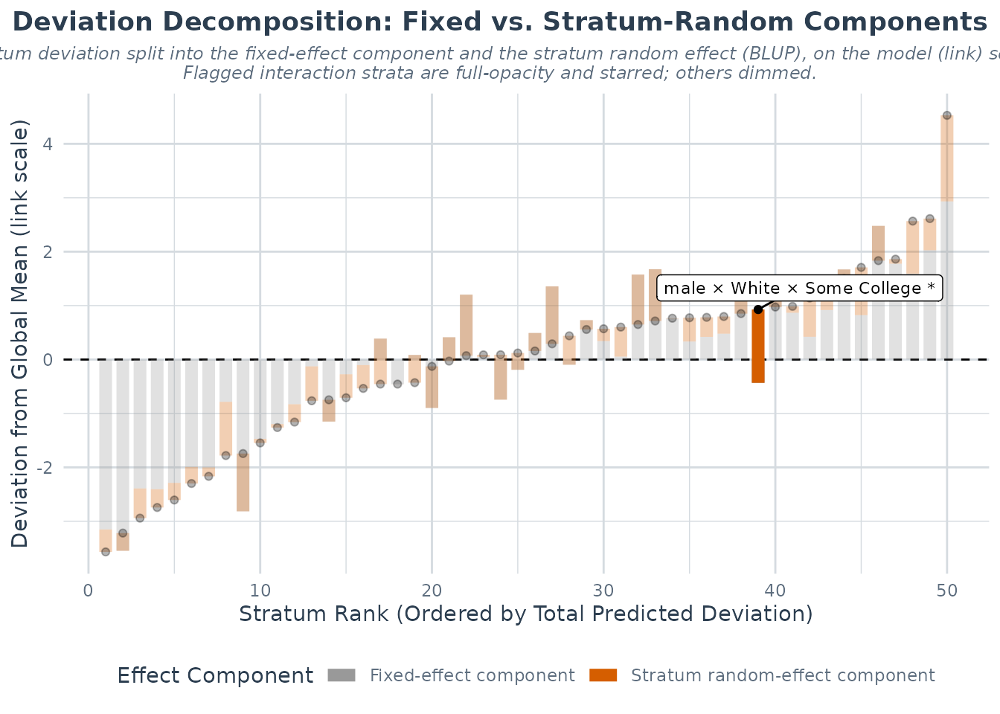
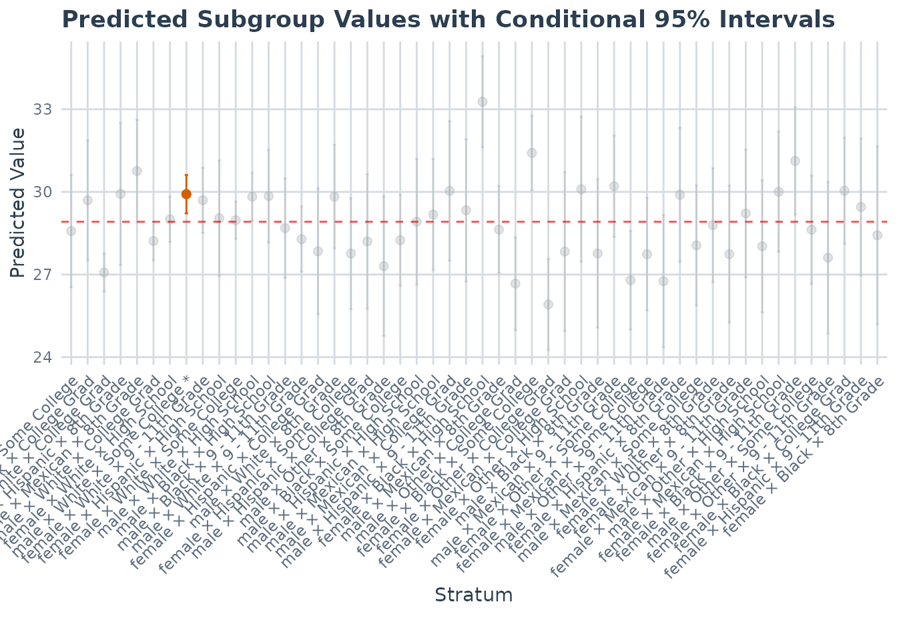

Finding interaction patterns
Hamid Bulut
2026-07-12
Source:vignettes/finding_interactions.Rmd
finding_interactions.RmdOverview
A common follow-up question is which strata depart most clearly from the additive expectation.
For this exploratory diagnostic, maihda() can compute
the adjusted-model stratum random effects, intervals, and flags. When
you use interactions = "BH", the flags use the
Benjamini-Hochberg adjustment. The diagnostic is stored in the analysis
object and can be reused by the effect-decomposition and
predicted-strata plots.
Run a standard analysis and choose the multiplicity rule
The default is adjust = "BH" (Benjamini-Hochberg):
scanning all strata to see which ones interact is a screening question,
so the flags are false-discovery-rate controlled. For the uncorrected,
per-stratum individual view, set interactions = "none".
The call below names the (default) Benjamini-Hochberg rule explicitly:
library(MAIHDA)
model_bh <- maihda(
BMI ~ Age + Gender + Race + Education + (1 | Gender:Race:Education),
data = maihda_health_data,
interactions = "BH" # Benjamini-Hochberg adjustment (also the default)
)The printed output reports how many strata were flagged and which
adjustment rule was used. The full table is stored in
model_bh$interactions.
model_bh$interactions
#> ── Intersectional interactions ─────────────────────────────────────────────────
#> 1 of 50 strata flagged (95% interval; BH-adjusted approximate p-values).
#> Model: adjusted (two-model); interaction on the link (latent) scale.
#>
#> stratum label n interaction se lower upper
#> 8 male × White × Some College 328 1.359 0.3448 0.6836 2.035
#> p_value p_adjusted flagged direction
#> 8.056e-05 0.004028 TRUE above
#>
#> Interaction BLUPs are shrunken (partially pooled) estimates; treat flags as
#> exploratory. See ?maihda_interactions.
#> Each row is one stratum. The main columns are:
-
interaction: the adjusted-model stratum random effect, on the model scale. -
lowerandupper: the interval for that random effect. -
direction: whether the stratum is above or below the additive expectation. -
flagged: whether the stratum passes the selected screening rule.
For frequentist fits, the table also includes the conditional standard error, p-value, and adjusted p-value when a correction is requested.
Highlight flagged strata
The plotting methods can reuse the stored diagnostic. Because
model_bh was fitted with interactions = "BH",
highlight_interactions = TRUE uses the Benjamini-Hochberg
flags. In the effect-decomposition plot, the labels also follow that
same flagged set.
plot(model_bh, type = "effect_decomp", highlight_interactions = TRUE)
The same flags can be reused in the predicted-strata view.
plot(model_bh, type = "predicted", highlight_interactions = TRUE)
If the analysis was fitted without a stored interaction diagnostic, pass the adjustment rule directly:
plot(model, type = "effect_decomp", highlight_interactions = "BH")Is an interaction negligible? (equivalence / ROPE)
A flag asks whether an interaction differs from zero. Often the more
useful question is whether it is large enough to matter. Pass a
region of practical equivalence (rope, on the model scale)
and each stratum is classified from its interval as
relevant (interval entirely outside the region),
negligible (entirely inside it), or
inconclusive (straddling a bound):
maihda_interactions(model_bh, rope = 0.5)
#> ── Intersectional interactions ─────────────────────────────────────────────────
#> 1 of 50 strata flagged (95% interval; BH-adjusted approximate p-values).
#> Model: adjusted (two-model); interaction on the link (latent) scale.
#> Equivalence vs ROPE [-0.5, 0.5]: 1 relevant | 0 negligible | 49 inconclusive.
#>
#> stratum label n interaction se lower upper
#> 8 male × White × Some College 328 1.359 0.3448 0.6836 2.035
#> p_value p_adjusted flagged direction decision
#> 8.056e-05 0.004028 TRUE above relevant
#>
#> Interaction BLUPs are shrunken (partially pooled) estimates; treat flags as
#> exploratory. See ?maihda_interactions.
#> There is no default rope: the smallest interaction worth
caring about is a substantive choice, made on the model’s (link)
scale.
See also
- Introduction to MAIHDA, the main two-model workflow.
- Interpreting MAIHDA plots and diagnostics, how to read the effect-decomposition and predicted-strata plots.
- Bayesian MAIHDA for sparse intersections, sparse cells and uncertainty in variance components.
References
Evans, C. R., Williams, D. R., Onnela, J. P., & Subramanian, S. V. (2018). A multilevel approach to modeling health inequalities at the intersection of multiple social identities. Social Science & Medicine, 203, 64-73.
Merlo, J. (2018). Multilevel analysis of individual heterogeneity and discriminatory accuracy (MAIHDA) within an intersectional framework. Social Science & Medicine, 203, 74-80.
Schuirmann, D. J. (1987). A comparison of the two one-sided tests procedure and the power approach for assessing the equivalence of average bioavailability. Journal of Pharmacokinetics and Biopharmaceutics, 15(6), 657-680.